(리뷰) EfficientNetV2 - Smaller Models and Faster Training
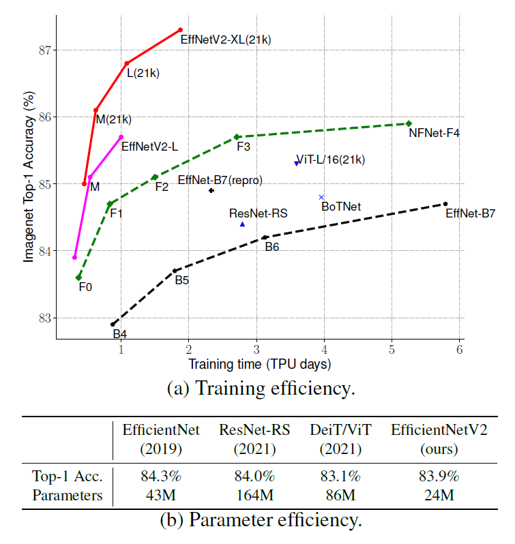
오늘은 Google Brain에서 발표한 EfficientNetV2: Smaller Models and Faster Training 논문에 대해 리뷰를 진행해보려고 합니다. EfficientNetV2는 이름에서 알 수 있듯, 가장 보편적으로 사용되는 분류 모델 중 하나인 EfficientNet을 개선한 모델입니다. 모델의 크기(parameter 개수)와 학습 속도 측면에서 효율성을 극대화하였다고 하는데, 어떻게 개선이 되었는지 살펴보겠습니다!
Training Efficiency
자연어 처리 분야에서 몇 번의 대화만으로도 언어 학습 능력을 보여준 GPT-3 모델은 그 놀라운 성능으로 많은 주목을 받았습니다. 하지만 뛰어난 성능의 이면에는 엄청난 크기의 모델과 학습 데이터, 그리고 몇 천개의 GPU를 활용한 몇 주 간의 학습이 존재했습니다. GPT-3 모델은 의심의 여지 없이 뛰어난 성능을 보여주었지만, 학습에 많은 자원이 필요했기 때문에 재학습을 한다거나 모델을 개선하려는 실험 자체가 이루어지기 어려웠습니다. 근래에 이런 학습 효율성에 대한 문제가 대두되기 시작하면서, 이를 개선하기 위한 연구들이 많이 진행되었습니다.
학습의 효율성(Training efficiency)은 모델을 학습하는데 걸리는 시간을 의미하는데, 학습 단계에서 이는 크게 두 가지 요소에 의해 결정됩니다. 첫 번째는 batch size입니다. Batch size는 전체 데이터셋을 학습하는데 필요한 total step의 수에 반비례하기 때문에, batch size를 키우는 것은 것은 학습 시간을 줄이는 데 필수적입니다. 학습에 필요한 GPU 메모리는 한정되어 있기에 batch size를 키우기 위해서는 모델이나 데이터의 크기를 줄여야 합니다. 이를 위해 모델의 크기를 줄이는 model pruning 또는 quantization 연구도 많이 진행되고 있습니다. 하지만 이번 논문에서는 모델의 크기보다는 데이터의 크기, 특히 이미지 자체의 해상도를 줄이는 학습 방법을 제안하였습니다. EfficientNet V2는 줄어든 크기의 입력 이미지로도 좋은 성능을 얻을 수 있는 progressive learning 학습 방법을 적용한 모델입니다.
수렴 속도(Convergence rate) 역시도 학습의 효율성을 결정하는 요소입니다. 수렴 속도를 개선하기 위해 적절한 hyperparameter를 선정하는 것도 중요하지만, 적절한 데이터의 배치를 통해 쉬운 데이터에서 어려운 데이터의 순서로 학습하는 curriculum learning과 같은 방법을 적용할 수도 있습니다. 이미지의 크기는 해당 이미지가 담고 있는 정보의 크기(차원)을 의미합니다. 작은 이미지는 큰 이미지에 비해 정보량이 적고, 좀 더 난이도가 낮은 학습에 해당합니다. 앞서 설명한 progressive learning 학습 방법은 작은 이미지에서 큰 이미지 순서로 학습함으로써 모델의 학습 속도를 극대화했습니다.
EfficientNet V1
EfficientNet은 2019년에 발표되어 모델 크기와 계산량 측면의 효율성을 극대화하면서 정확도를 높인 모델입니다. EfficientNet은 가장 기본 모델인 B0의 최적의 구조를 얻기 위해 강화학습 기반의 네트워크 구조 탐색(NAS) 방법을 이용하였는데, 이 때 정확도는 높이고 계산량은 낮아질 때 보상이 극대화되는 방향으로 학습하였습니다. 학습의 효율성은 전혀 고려되지 않았는데, 저자는 세 가지 측면에서 EfficientNet V1을 지적했습니다. 우선 학습에 너무 큰 이미지들을 이용하였으며, 모델을 구성하는 기본 단위인 MBConv 블럭에 포함된 depthwise convolution 연산이 병목을 발생시켰고, compound scaling을 통해 모델의 크기를 점진적으로 키우는 과정에서 불필요하게 모델을 키우는 부분이 존재한다는 것이었습니다. 그리고 해당 측면을 EfficientNet V2에서 완전히 개선하였습니다. 그렇다면 각각 어떻게 개선되었는지 하나씩 살펴보겠습니다.
Training with very large image sizes is slow
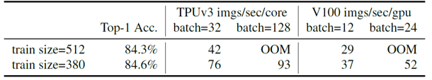
EfficientNet V1의 가장 작은 모델과 가장 큰 모델인 B0와 B7은 각각 224x224와 600x600 의 해상도를 이미지의 기본 크기로 설정하여 학습했습니다. 큰 이미지를 이용하여 학습하게 되면 앞서 설명한 것처럼 작은 batch size로 학습할 수밖에 없고, 이는 학습 속도 저하의 주된 요인이 됩니다. 위의 표에서도 이미지의 크기가 512인 경우가 380인 경우보다 단위 시간동안 적은 수의 이미지를 학습한다는 것을 보여주고 있습니다.
이러한 문제를 개선하기 위해 progressive resizing이라는 학습 방법이 제안되기도 하였습니다. Progressive resizing은 작은 크기의 이미지에서 큰 크기의 이미지의 순서로 모델을 학습하는 방법으로, 학습 도중에 학습 이미지의 크기를 동적으로 조절하였습니다. 대표적인 것이 Three layer cake model 이라고 불리는 형태의 모델인데, 먼저 48x48 크기의 이미지로 모델을 학습한 후에, 모델의 맨 앞 layer에 96x96 크기의 이미지를 받을 수 있는 convolution layer와 48x48 크기로 변환해주는 pooling layer만을 붙여서 96x96 크기의 이미지로 학습을 이어가는 형식의 방법입니다.
이렇게 학습하면 작은 이미지를 큰 이미지로 크기 변환해서 학습할 필요가 없기 때문에, 평균적인 이미지 크기를 줄일 수 있고 결과적으로 학습의 효율성을 높이게 됩니다. 또한 작은 크기의 이미지에서 큰 크기의 이미지의 순서로 학습이 진행되기 때문에, 처음에 쉬운 시각 정보를 먼저 학습하고 이후에 이를 바탕으로 어려운 시각 정보를 학습할 수 있어 모델이 더 빠르게 수렴하게 됩니다.
하지만 실제로 progressive resizing을 적용하면 모델의 정확도가 기존보다 조금 떨어지는 문제가 있다고 합니다. 논문에서는 학습 과정에서 regularization의 강도를 일정하게 두었기 때문에 정확도가 감소한 것이라고 분석하고 있습니다. 그렇다면 우선 regularization이 무엇인지부터 간단히 설명드리겠습니다.
Regularization은 정규화, 일반화 등의 의미를 가지고 있습니다. 기계학습 분야에서 regularization은, 모델의 용량이 충분히 큰 경우에 학습이 진행됨에 따라 데이터를 전부 외워버리는 overfitting을 방지하는 방법을 의미합니다. 대표적으로 손실 함수에 모델 인자에 대한 항을 추가하는 방법이나, 모델의 일반화를 위한 dropout 및 data augmentation 등이 모두 regularization 방법에 해당합니다.
다시 본론으로 돌아와서, 작은 크기의 이미지로 학습할 때는 정보량이 많지 않아서 작은 용량의 모델로도 충분히 학습이 가능하기 때문에 regularization의 강도를 줄여야합니다. 반면에 큰 크기의 이미지로 학습할 때는 정보량이 많아 overfitting이 발생할 수 있기 때문에 regularization의 강도를 키워서 학습해야 합니다. 이를 논문에서는 progressive learning with adaptive regularization 이라고 부릅니다.
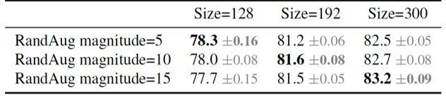
적절한 크기의 regularization에 대한 필요성을 증명하기 위해 여러 크기의 이미지에 대해 다른 강도의 regularization을 적용하여 학습하고, 정확도를 비교해 보았습니다. 위의 표를 보면 크기가 작은(128x128) 이미지의 경우에 regularization을 약하게 적용했을 때 가장 성능이 좋았던 반면에, 크기가 큰(300x300) 이미지의 경우에는 regularization을 크게 적용했을 때 정확도가 가장 높았습니다. 이처럼 모델을 학습할 때, 학습 이미지의 크기에 따라 적절한 크기의 regularization 강도를 적용해야 한다는 것을 확인할 수 있었습니다.
EfficientNet V2는 크게 세 가지의 regularization을 이용하였습니다. 먼저 뉴런의 일부를 학습 가능하지 않은 상태로 두는 dropout 을 이용하였고, 이외에도 여러 이미지 왜곡 기법들을 임의로 선택하여 임의의 강도로 적용하는 RandAugment 와 서로 다른 두 이미지를 합치는 Mixup 을 이용하였습니다.
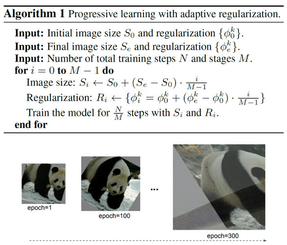
위의 pseudocode와 학습 단계별 이미지의 형태를 보면, progressive learning with adaptive regularization 을 적용하여 작은 이미지부터 큰 이미지의 순서로 모델을 학습하였으며, 이미지의 크기에 비례하는 regularization 강도를 설정해준 것을 볼 수 있습니다. (Epoch 1에서는 작은 이미지에 대해 간단한 augmentation만 적용되어 있지만, epoch 300에서는 큰 이미지에 대해 강한 mixup이 적용되어 있는 것을 확인할 수 있습니다.) 이렇듯 EfficientNet V2는 적절한 강도의 regularization을 적용함으로써, progressive learning 과정에서 떨어진 정확도를 보정해주었습니다.
Depthwise convolutions are slow in early layers
Depthwise convolution이란 MobileNet V1에서 처음 소개된 연산으로, 기존 3x3 convolution 연산의 메모리와 연산량을 줄이기 위해 제안되었습니다. 입력 데이터의 각 채널에 깊이가 1인 kernel을 이용하여 convolution 연산을 실행하고 그 결과를 다시 이어붙여주는 형식입니다. EfficientNet V1 모델은 depthwise convolution을 이용한 MBConv 블럭으로 구성되어 있습니다.
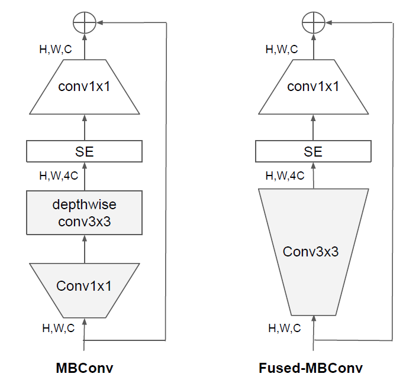
하지만 기존 3x3 convolution 연산은 가장 자주 이용되는 연산이기 때문에, GPU에서 이용하는 여러 라이브러리들(cuDNN, MKL 등)에서 최적화가 잘 되어있습니다. 이 때문에 depthwise 3x3 convolution 연산을 이용하였을 때 오히려 overhead가 발생하였습니다. 이를 보완하기 위해 EfficientNet V2 모델에서는, MBConv 블럭의 depthwise 3x3 convolution 연산을 3x3 convolution 연산으로 전환한 Fused-MBConv 블럭을 이용하였습니다.
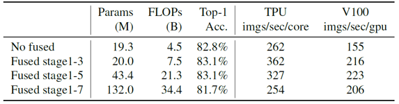
위의 표를 보면 MBConv 블럭만 이용했을 때보다 Fused-MBConv 블럭을 이용했을 때, parameter 수와 FLOPs 측면에서는 손해를 보지만 학습의 정확도와 속도 측면에서는 오히려 효율적임을 알 수 있습니다. 정확히 모델의 어느 부분에서 어떤 크기의 Fused-MBConv 블럭을 이용해야만 가장 좋은 결과를 얻을 수 있을지 알아내기 위해서, 강화학습을 이용한 네트워크 구조 검색(NAS)를 이용하였습니다. 이 때 보상 함수는 정확도와 학습 시간, 모델 크기(parameter 개수)로 구성하였습니다.
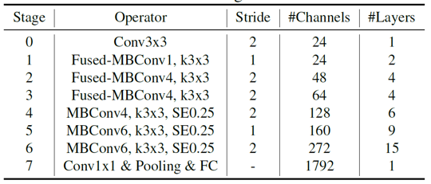
결과적으로 EfficientNet V2 모델은 위와 같이 구성되었습니다. Fused-MBConv 블럭은 모델의 초반부에서만 이용되었는데, 모델의 후반부로 갈수록 채널 수가 늘어나면서 MBConv 블럭의 depthwise convolution 연산을 통해 얻을 수 있는 효율성이 크기 때문인 것으로 생각됩니다.
Equally scaling up every stage is sub-optimal
EfficientNet V1에서는 사용자의 GPU 크기 및 환경에 맞는 최적의 모델을 선택할 수 있도록 여러 크기의 모델을 만들었습니다. 이 때 compound scaling 방법을 통해 모델의 채널 수, 층 수, 해상도를 일정하게 키우며 모델의 크기를 점차적으로 늘려주었습니다. EfficientNet V2에서는 이렇게 모든 단계의 모델을 키워주는 것이 비효율적임을 휴리스틱하게 알게 되었다고 하며, 모델의 초반부보다 후반부에 비중을 두어 모델을 키워나가야 한다고 이야기합니다.
또한 학습의 효율성을 위해 모델이 입력받을 수 있는 이미지의 해상도를 480x480으로 제한하였고, small(S)/ medium(M)/ large(L)의 서로 다른 크기를 가진 세 모델을 제안하였습니다.
Training
EfficientNet V2를 학습하기 위해 크기가 다른 두 종류의 데이터셋을 이용하였습니다. 백만 개 정도의 이미지와 천여 개의 카테고리로 구성된 ImageNet-ILSVRC2012와 천만 개 정도의 이미지와 2만 2천여개의 카테고리로 구성된 ImageNet21k 데이터셋을 이용하였습니다.
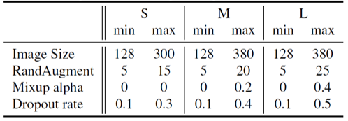
모델 학습은 4096개의 배치 크기를 이용하여 진행하였고, RMSProp optimizer와 0.2의 lr을 이용해 350 epochs만큼 진행하였습니다. 또한 progressive learning with adaptive regularization 을 위해 350 epochs를 87 epochs씩 네 단계로 나누고, 이미지 크기와 정규화의 강도를 단계마다 일정하게 증가해주며 학습하였습니다. 모델별로 이용한 이미지 크기 및 정규화의 강도는 위와 같습니다.
Results
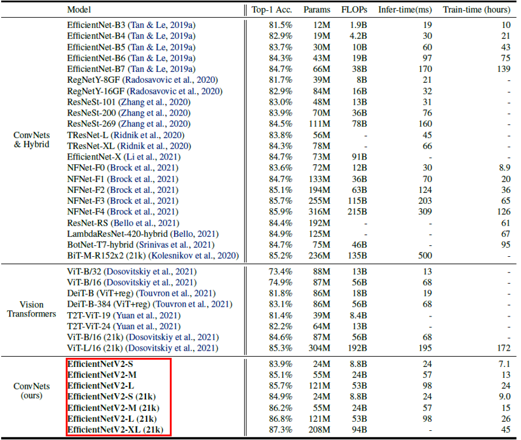
EfficientNet V2는 convolution 및 transformer 기반의 여러 모델들과 비교했을 때 더 빠르고, 정확하며, 모델 크기 측면에서도 효율적인 결과를 보여주었습니다. 또한 학습의 효율성에 대한 개선을 목적으로 한 만큼, EfficientNetV2-M 모델은 비슷한 정확도를 기록한 EfficientNet-B7에 비해 학습 과정에서 11배나 빠른 속도로 수렴하였습니다.
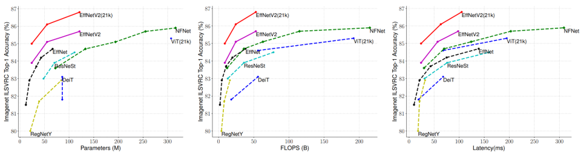
위의 그림에서는 EfficientNet V2를 모델 크기(parameter 개수), 계산량(FLOPs), 그리고 latency 측면에서 다른 모델들과 비교하였습니다. 학습의 효율성 차원에서 최적화된 모델인 EfficientNet V2는 학습 이후 추론 단계에서 발생하는 latency에서도 기존 EfficientNet V1의 1/3 수준으로 개선된 모습을 보여주었습니다.
Ablation studies
1. Comparison to EfficientNet V1 Model Architecture
EfficientNet V2의 구조적 우수성을 확인하기 위해, EfficientNetV2-M 모델과 EfficientNet-B7 모델을 같은 조건에서 progressive learning with adaptive regularization 를 적용하여 학습하고 결과를 비교하였습니다.
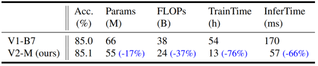
위의 그림은 그에 대한 결과를 보여줍니다. EfficientNetV2의 구조를 이용했을 때, 모델의 크기와 계산량 차원에서도 개선이 있었지만 무엇보다도 학습 및 추론 시간이 크게 감소하였습니다. Fused-MBConv 블럭과 NAS를 이용해서 찾은 모델 구조의 우수성을 확인할 수 있습니다.
2. Progressive Learning for Different Networks
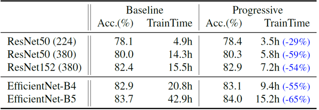
Progressive learning 방법이 일반적으로 학습의 효율성을 개선한다는 것을 보여주기 위해, EfficientNet V2 뿐만아니라 다양한 모델에 progressive learning을 적용하며 학습의 수렴 속도를 비교해보았습니다. 이미지의 기본 크기가 너무 작은 경우를 제외하면, 대부분 학습 시간을 50% 이상 줄여주었습니다.
3. Importance of Adaptive Regularization
이미지의 크기에 따라 regularization의 강도를 조절해주는 adaptive regularization 방법의 중요성 또한 실험을 통해 보여주었습니다. 일반적으로 augmentation을 위해 이용하는 random resizing과 이미지의 크기를 점차적으로 키우는 progressive resizing에 각각 adaptive regularization을 적용한 후 결과를 비교하였습니다.
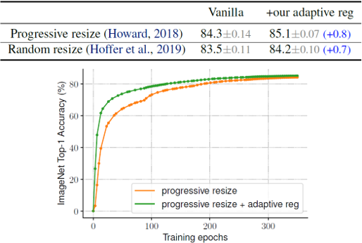
두 경우 모두 adaptive regularization을 적용했을 때 정확도가 향상되었습니다. 결과적으로 progressive learning과 adaptive regularization을 동시에 이용하게 되면, 학습의 정확도는 어느정도 유지(또는 개선)한 채 효율성을 극대화시킬 수 있다는 것을 확인하였습니다.
Summary
본 논문에서는 학습의 효율성이라는 측면에서 기존 EfficientNet을 개선한 EfficientNet V2를 소개하였습니다. Progressive learning with adaptive regularization이라는 새로운 학습 방법을 제안하였으며, 모델의 구조도 효율적으로 개선하였습니다.
최근 학습 또는 추론 시간의 개선에 대한 연구가 활발하게 진행되는 것 같습니다. 관련한 연구가 있다면 앞으로도 종종 소개해드리겠습니다. 긴 글 읽어주셔서 감사합니다. 궁금한 점은 댓글로 달아주세요! 그럼 다음 리뷰로 찾아오겠습니다 :)
참고 문헌 및 출처